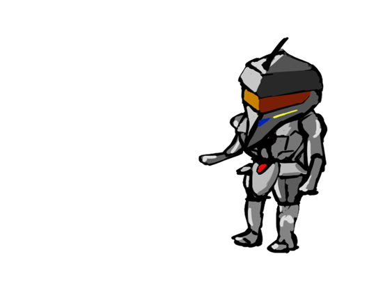

About Me
I'm a game designer. I usually work on the programming side of the game, but I also make 2D/3D art assets when my team needs me to.
My Skill Set
Game Engines: Unity3D, Unreal4, GameMaker Studio Languages: C/C++, C#, Python, Javascript Graphics: Photoshop, Maya
What I Worked On
VR CR/MRI Viewer: Medical Image Viewer
The CT/MRI scan of a patient is stored in a DICOM file. This program extracts the 3D data from a selected file, builds mech-like point clouds to display various body parts of the patient. Also lets the patient view slices of the body parts with a VR controller via Ray Marching.
On Your Knees: (In Progress) Platformer Arpg
I'm currently working on this platformer aRPG. More Information will be uploaded in the future.
The Aquatic Messenger: VR Underwater Simulation

VR underwater simulation game, allows you to interact with creatures from different eras and learn how they affect the water.
View SiteThe Dawn: My School Project

We made this mini multiplayer game to learn network feature through Unreal 4. The team consists of 3 programmers...
View SourceEducational Visual Novel: For Beginner Chinese Learners
This is a project I worked with Chinese language professor to help the beginner Chinese learners get started with this langauge more easily.